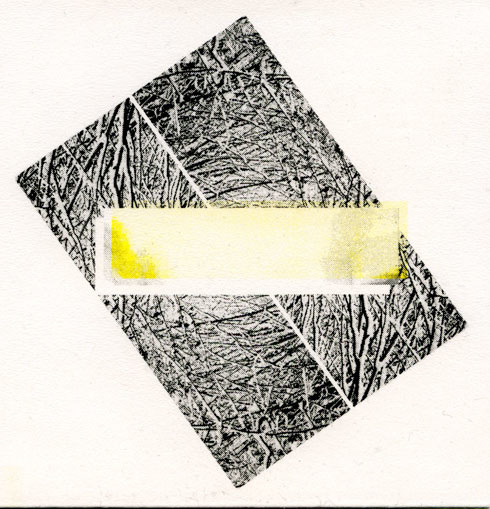

Fellfield Draff
Ripe with drama, texture, technological unease and sheer physical heft … A stunning requiem mass for dead media - The Wire
the aural experience of viewing long-term shifts of geological time at the same time as peering down a microscope at the teeming minutiae in a single drop of water … a subtle synthesis of brute force and beauty - We Need No Swords

Daniel Bennett - electronics, software
Stephen Cornford - electronics, objects
Recorded & constructed in Bristol 2013-2014
Mastered by Joe Panzner
Artwork by Daniel Bennett
HR10 [Hideous Replica]
CD edition of 100, 2015
Available from http://www.hideousreplica.co.uk/hr10
Review by Robert Barry in The Wire:
From the moment it starts, Fellfield Draff is a recording ripe with drama, texture, technological unease and sheer physical heft. According to the label website, the album was “recorded and constructed in Bristol 2013-2014” and it certainly feels like something as much built as inscribed. Though it’s produced entirely from electronic sounds, the material appears to be premised on the material infrastructure of modern technology rather than the more ideological metaphors of clouds and celestial highways that tend to be superimposed on top of that. This is the sound of technology deconstructing itself, a stunning requiem mass for dead media.